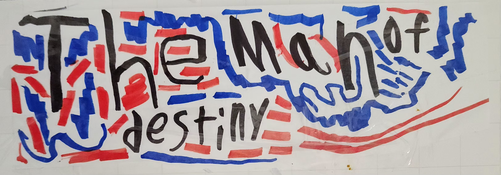
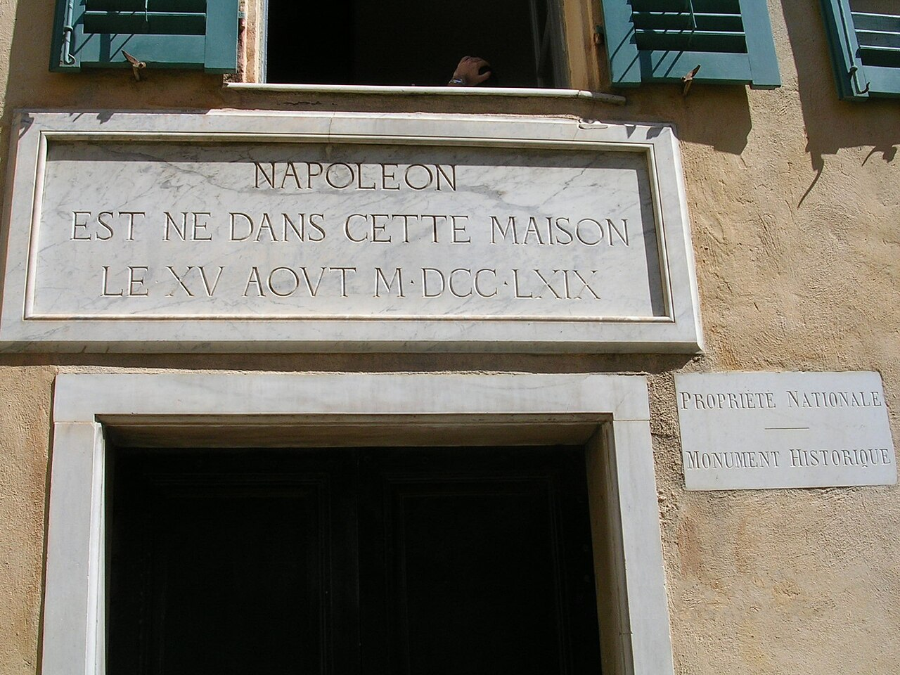
Birth of Napoleon (1769)
Napoleon Bonaparte was born on 15 August 1769 in Ajaccio on the island of Corsica. His family belonged to the minor Corsican nobility but had limited wealth. Shortly before his birth, France had taken control of Corsica, which meant Napoleon grew up between two cultural worlds: Corsican identity and French political authority. This early background shaped his ambition and determination to rise through the institutions of his adopted country.
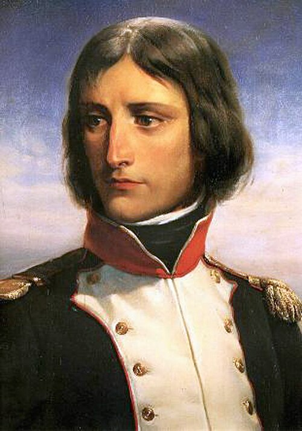
Military Education (1779–1785)
Napoleon left Corsica at age ten to attend military school in mainland France. He studied at Brienne-le-Château for five years, mastering mathematics, history, and geography. In 1784 he was admitted to the prestigious École Militaire in Paris, where he specialized in artillery—a branch requiring advanced mathematical thinking that would become one of Napoleon's greatest strategic advantages on the battlefield.
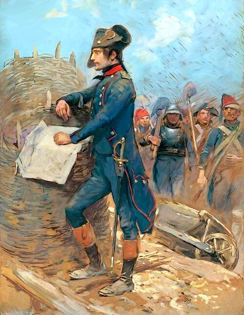
Siege of Toulon (1793)
Napoleon first rose to national attention during the Siege of Toulon in 1793. British and royalist forces had seized this important Mediterranean port. The young artillery captain designed a bold strategy: rather than attacking directly, he positioned his guns on the heights surrounding the harbor, making the British naval position untenable. The plan succeeded brilliantly, and at twenty-four, Napoleon was promoted to brigadier general.
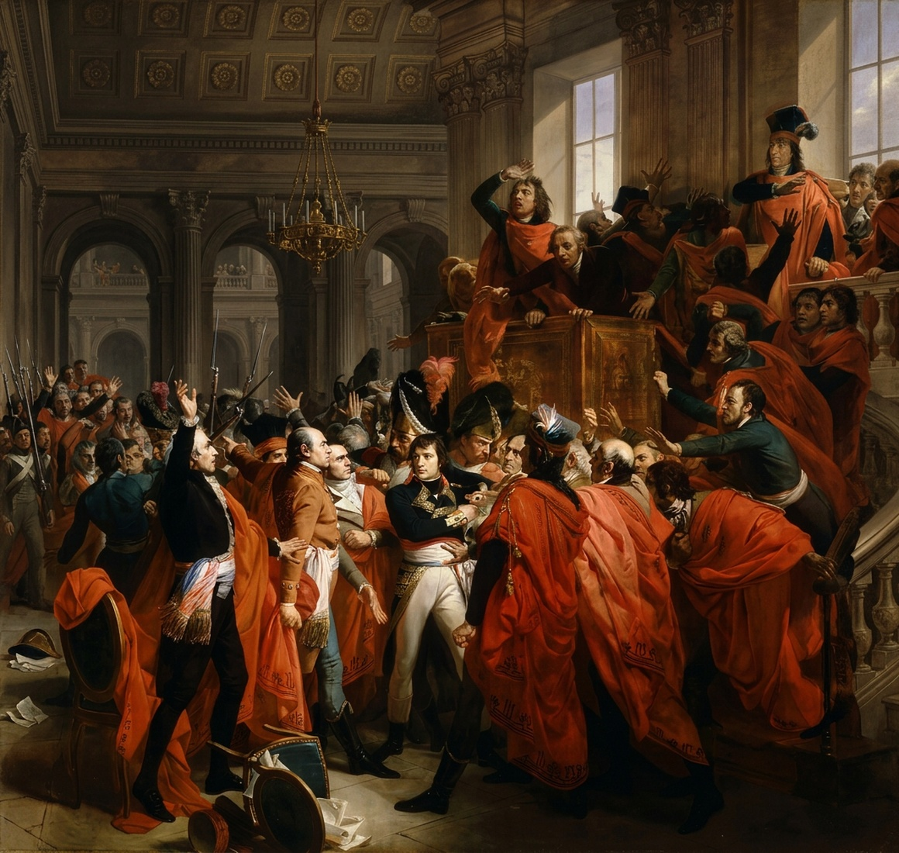
Coup of 18 Brumaire (1799)
By the late 1790s, France's revolutionary government had become weak and unpopular. On 9 November 1799, Napoleon participated in a carefully planned political coup that overthrew the Directory. A new government called the Consulate was established, with Napoleon as First Consul. This marked his decisive transition from celebrated military commander to political leader of France.
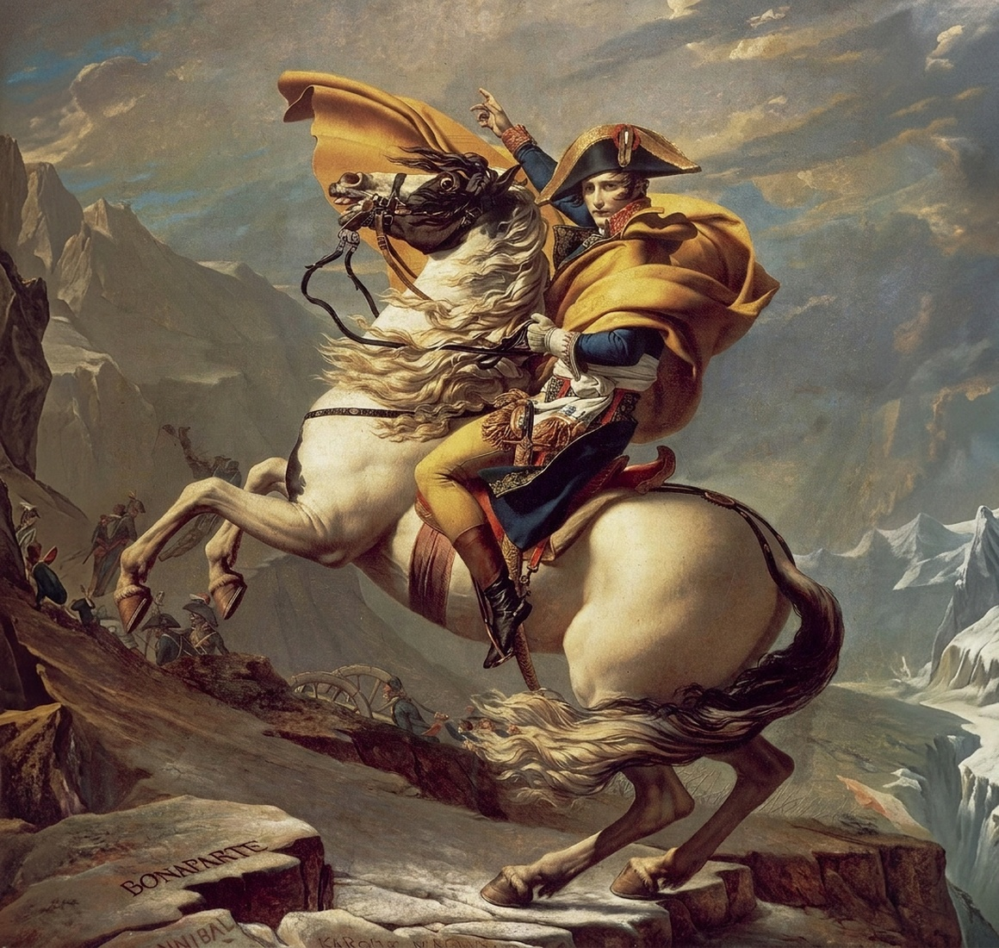
Crossing the Alps (1800)
In May 1800, Napoleon led the French army on a daring crossing of the Great St. Bernard Pass to surprise Austrian forces in northern Italy. Moving tens of thousands of soldiers with artillery through narrow mountain passes was a remarkable logistical achievement. The campaign culminated in the Battle of Marengo, where a near-defeat was turned into a decisive French victory.
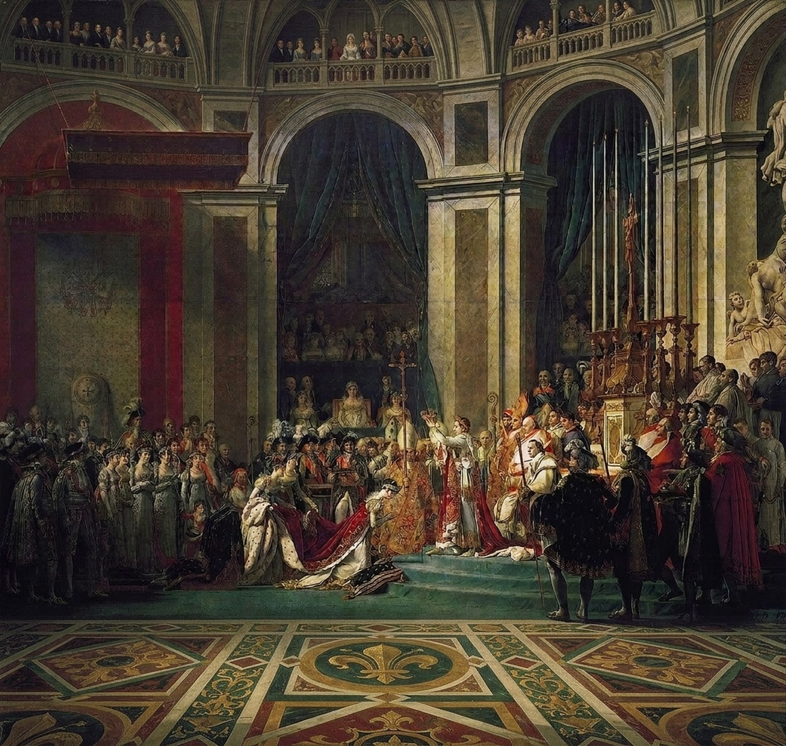
Coronation as Emperor (1804)
On 2 December 1804, Napoleon crowned himself Emperor at Notre-Dame Cathedral in Paris. In a dramatic departure from tradition, he took the crown from Pope Pius VII's hands and placed it on his own head, symbolizing that his authority derived from his own achievements rather than from divine right or papal blessing. He then crowned his wife Joséphine as Empress.
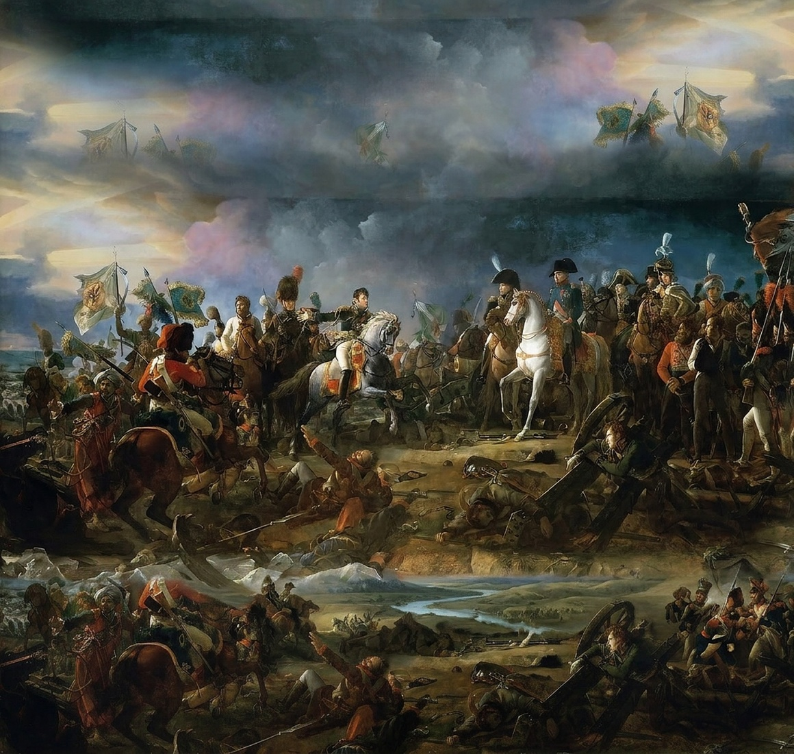
Battle of Austerlitz (1805)
The Battle of Austerlitz, fought on 2 December 1805, is widely regarded as Napoleon's greatest military victory. Facing the combined armies of Russia and Austria, Napoleon deliberately weakened his right flank to lure the allies into a trap. When they committed their forces, he struck with devastating force through their center. The allied army was shattered, losing nearly a third of its strength.
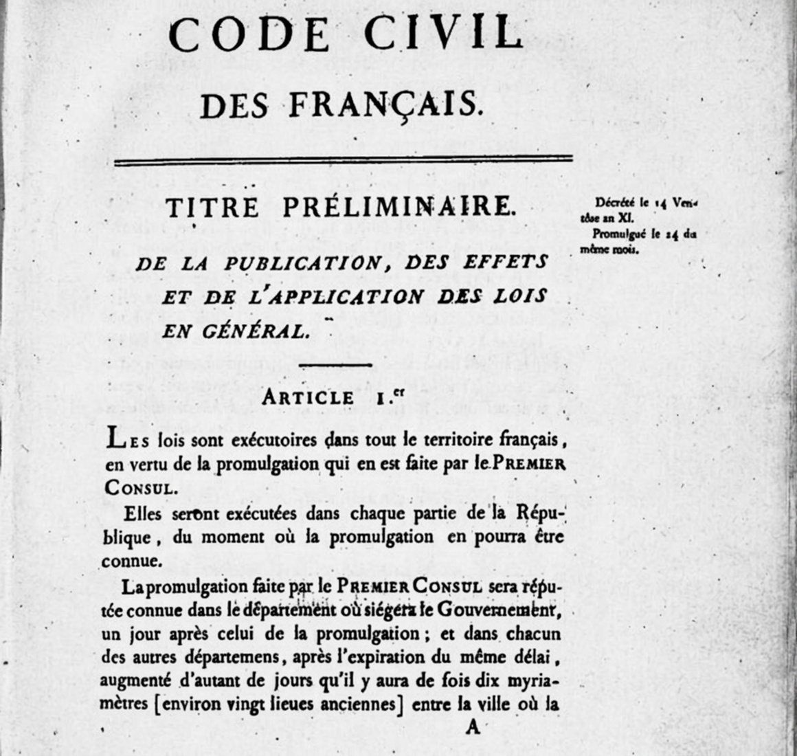
The Napoleonic Code (1804)
The Napoleonic Code replaced the patchwork of feudal, royal, and revolutionary laws with a unified legal system guaranteeing equality before the law, protection of property rights, and secular civil authority. Napoleon personally presided over many drafting sessions. The Code's influence spread far beyond France and continues to shape civil law in dozens of countries today.
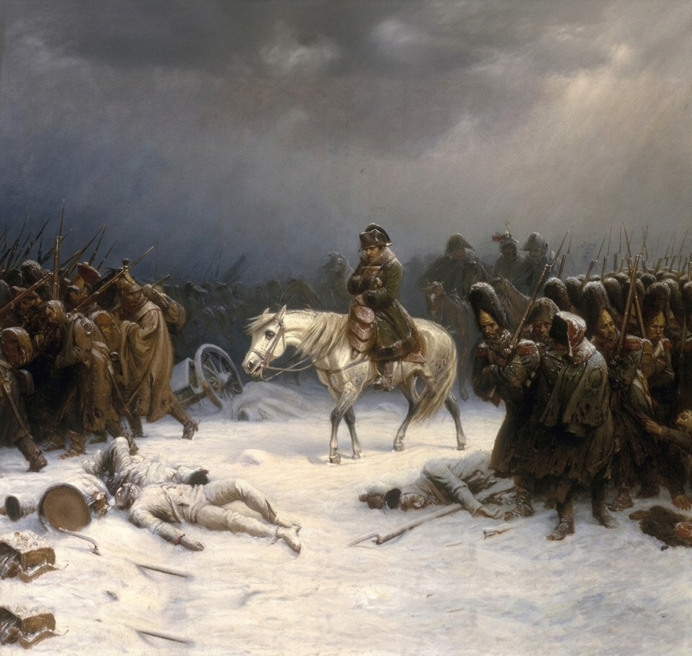
Invasion of Russia (1812)
In June 1812, Napoleon invaded Russia with over 600,000 soldiers—the largest army Europe had ever seen. Although his forces captured Moscow, they found it abandoned and aflame. With winter approaching and no peace offer from Tsar Alexander I, Napoleon ordered a retreat that became one of history's greatest military disasters. Fewer than 100,000 soldiers survived the return march.
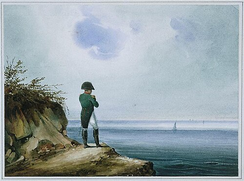
Exile on Saint Helena (1815–1821)
After his final defeat at Waterloo on 18 June 1815, Napoleon was exiled to Saint Helena in the South Atlantic, some 1,900 kilometers from the nearest land. He spent his final years dictating memoirs, gardening, and reflecting on his legacy. He died on 5 May 1821 at the age of fifty-one. His remains were returned to France in 1840 and now rest beneath the dome of Les Invalides in Paris.